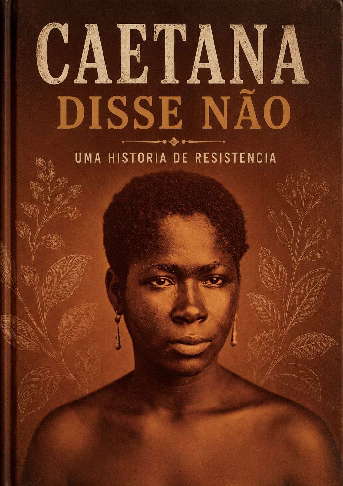

UMA HISTÓRIA DE RESISTÊNCIA
No material a seguir, você irá conhecer uma incrível história de resistência.
Há muito tempo, por volta de 1835, no Vale do Paraíba, localizado no interior de São Paulo, vivia uma jovem escrava chamada Caetana. Ela tinha cerca de 17 anos e trabalhava como mucama, também conhecida como criada doméstica na fazenda de café Rio Claro, cuidando das filhas do seu senhor, o capitão Luís Mariano de Tolosa.
Certo dia, Tolosa decidiu que Caetana deveria se casar com outro escravo da fazenda, chamado Custódio, que trabalhava como alfaiate. Mas Caetana não queria esse casamento. Ela disse não ao seu senhor, disse não ao noivo, disse não à sua família e, depois do casamento realizado sem seu consentimento, não deixou que o marido a tocasse. Mais do que isso: Caetana foi à Justiça da Igreja pedir a anulação do casamento.
Sua história é um raro exemplo de resistência feminina na sociedade escravista brasileira. Embora os juízes eclesiásticos tenham negado o pedido de anulação, tudo indica que, na prática, Caetana conseguiu viver como solteira pelo resto da vida. Ela nos ensina que, mesmo em situações de grande opressão, é possível dizer não e lutar pelos seus direitos.